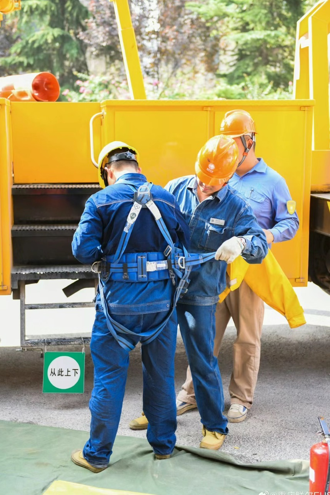
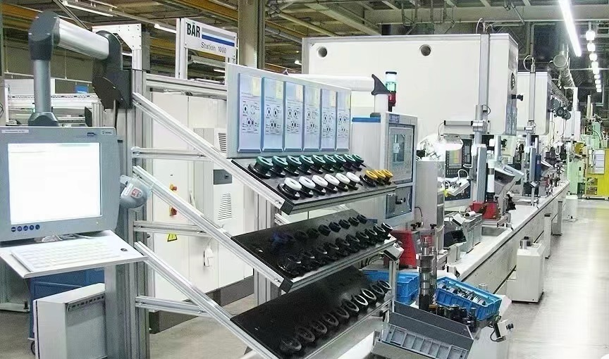
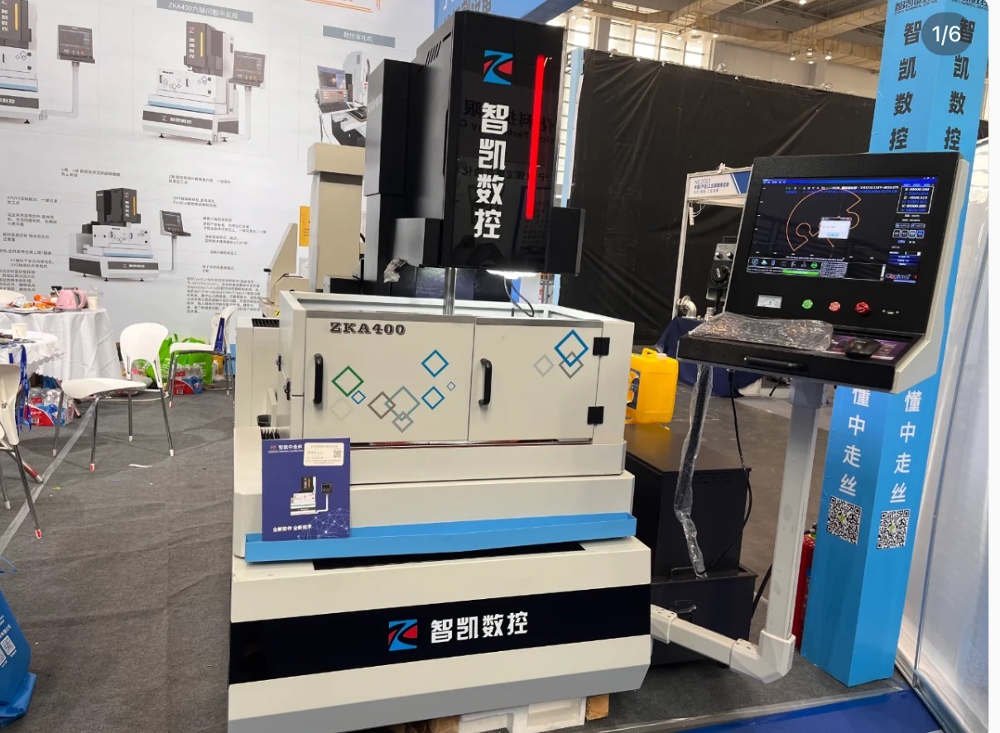
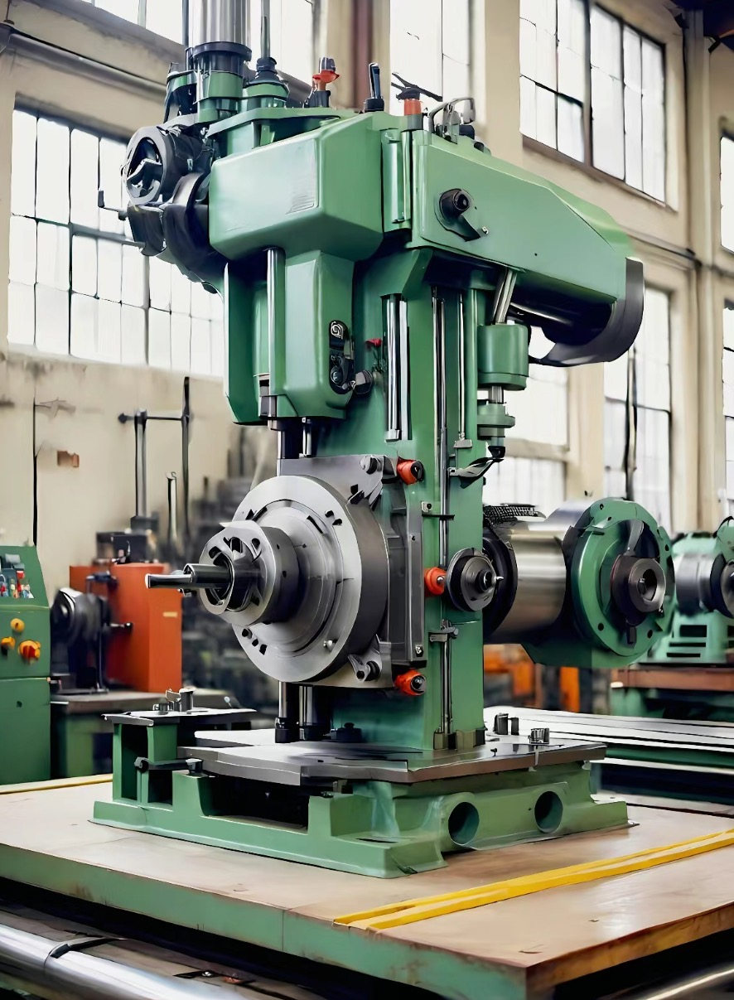
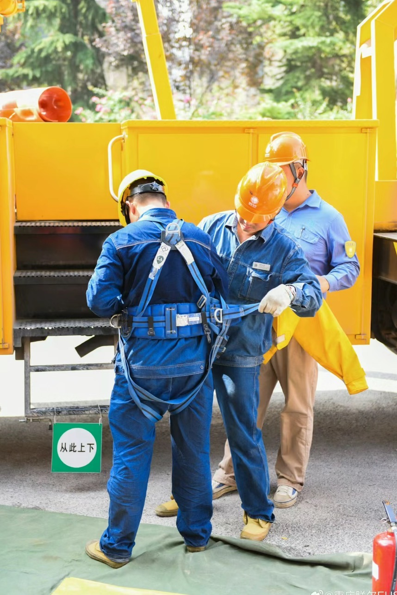
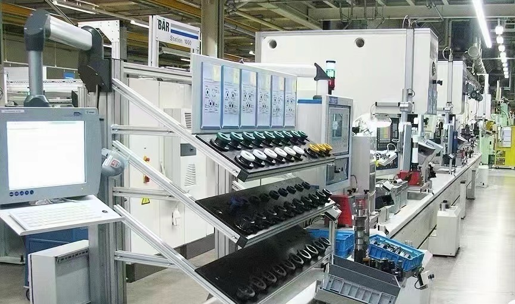
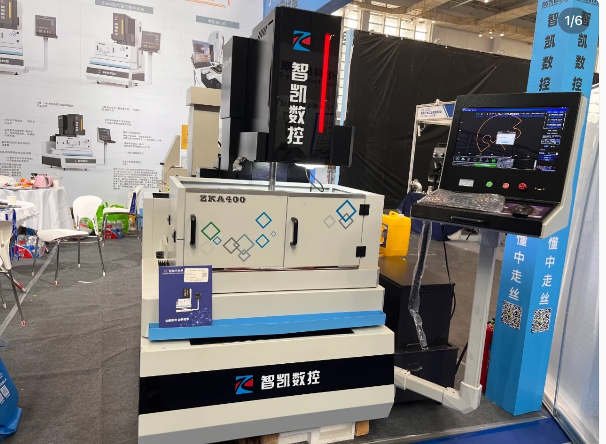
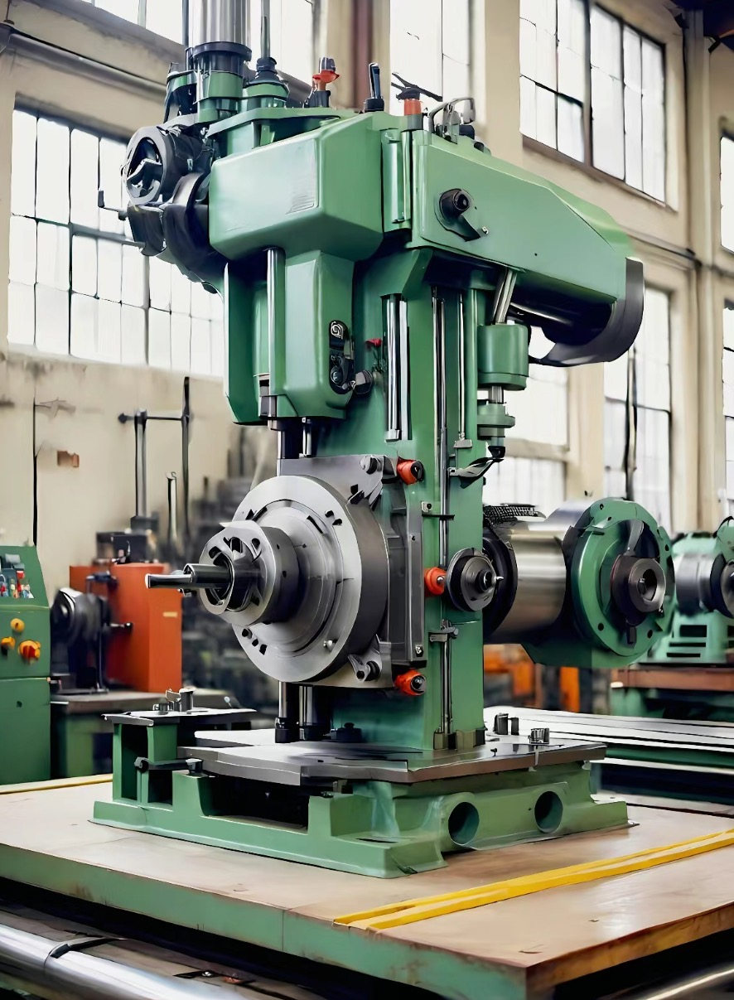
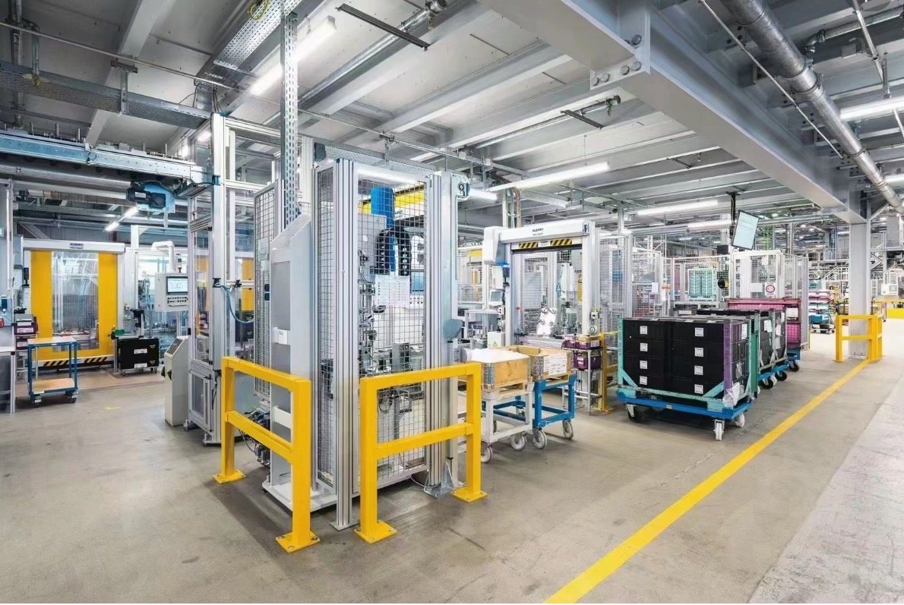
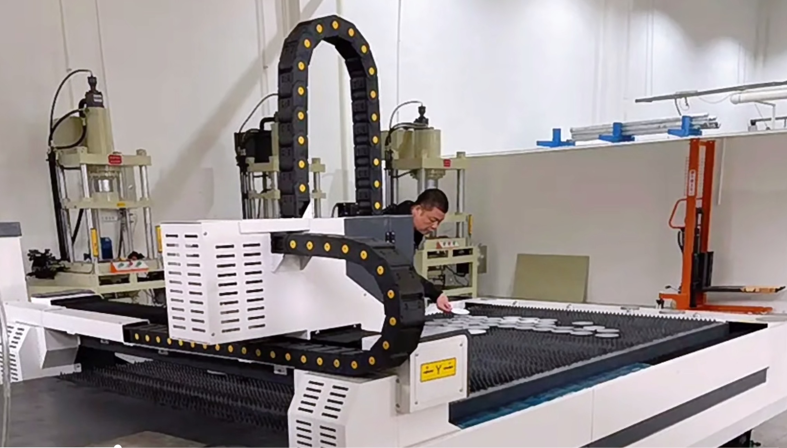

BBST
Final
BSST Team | ZWU
2024.6
1.Class Practice
(AUTODESK FUSION & SHAPR 3D)

Course → CNC
Learn how to keep safety
Learn CNC in indusrty: machine type, application
Make sure the machine ,material
Each CNC machine tool has its own characteristics and application fields, to
choose the right machine tool, first of all, to clarify the type, material
and accuracy requirements of the processed parts.
 







Determine the machine:
You need to choose the right CNC machine according to your machining needs. For example, if you need to machine complex surfaces or curves, you may want to choose a CNC milling machine. If you need to do a lot of shaft parts machining, you may need to choose a CNC lathe. At the same time, you also need to consider the precision, speed and reliability of the machine.
Determine the material:
The choice of material depends mainly on your product needs. For example, if your product requires high strength and wear resistance, you may want to choose steel or cemented carbide. If your product needs to be lightweight and corrosion-resistant, you may want to opt for aluminum or plastic. You also need to consider the processability of the material, such as machinability, heat treatment properties, etc.
Depending on your needs and budget, you may need to consult with a professional or machine supplier to determine the best machine and materials for you.
You need to choose the right CNC machine according to your machining needs. For example, if you need to machine complex surfaces or curves, you may want to choose a CNC milling machine. If you need to do a lot of shaft parts machining, you may need to choose a CNC lathe. At the same time, you also need to consider the precision, speed and reliability of the machine.
Determine the material:
The choice of material depends mainly on your product needs. For example, if your product requires high strength and wear resistance, you may want to choose steel or cemented carbide. If your product needs to be lightweight and corrosion-resistant, you may want to opt for aluminum or plastic. You also need to consider the processability of the material, such as machinability, heat treatment properties, etc.
Depending on your needs and budget, you may need to consult with a professional or machine supplier to determine the best machine and materials for you.
Programming of the program:
First of all, you need to determine the machining process and tool route
according to the drawings or models. Then, you can use dedicated CAM
(Computer-Aided Manufacturing) software to write CNC programs. This
program usually includes information such as tool selection, cutting
parameter setting, tool path planning, etc.
Check the program: After the program is written, you need to check the program to make sure that there are no errors or omissions. Some CAM software provides a program check that can automatically detect and prompt possible errors.
Simulation of the program: Before the program is uploaded to the machine, you can use the simulation function to preview the machining process. This will help you identify possible collisions or cutting problems that can cause damage or waste in the actual machining.
Upload of the program: After the program is written and checked, you need to upload the program to the CNC machine. This is usually done through a network connection or a USB device.
Execution of the program: On the machine, you need to follow the program instructions to assemble the tool and position the parts. You can then start the machine and start the automatic machining.
These are just some of the basic steps, and the actual program setup and simulation may vary depending on the machine and software. If you are a beginner, it is recommended that you learn and operate under the guidance of a professional.

Check the program: After the program is written, you need to check the program to make sure that there are no errors or omissions. Some CAM software provides a program check that can automatically detect and prompt possible errors.
Simulation of the program: Before the program is uploaded to the machine, you can use the simulation function to preview the machining process. This will help you identify possible collisions or cutting problems that can cause damage or waste in the actual machining.
Upload of the program: After the program is written and checked, you need to upload the program to the CNC machine. This is usually done through a network connection or a USB device.
Execution of the program: On the machine, you need to follow the program instructions to assemble the tool and position the parts. You can then start the machine and start the automatic machining.
These are just some of the basic steps, and the actual program setup and simulation may vary depending on the machine and software. If you are a beginner, it is recommended that you learn and operate under the guidance of a professional.
Setting the program and simulation
